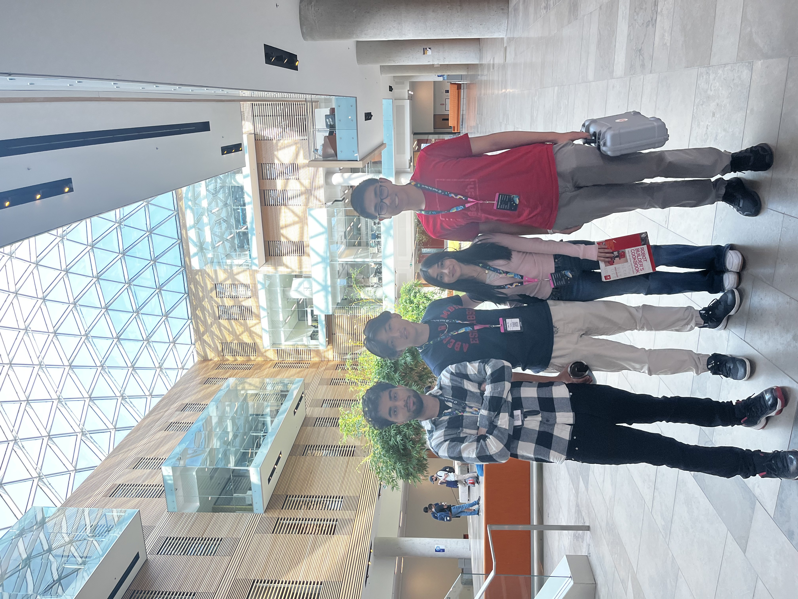

🤖 Github Repo
🎥 App Demo
SeeHawk App
The SeeHawk Story
SeeHawk was created at Hack The North 2022. As avid readers, we wanted a tool to track our reading metrics. As a child, I struggled with concentrating and focusing while reading. Specifically, I had a strong tendency to zone out. Our app provides the ability for a user to track their reading metrics and also quantify their progress in improving their reading skills.
Inspiration: By incorporating Ad Hawk’s eye-tracking hardware into our build, we’ve developed a reading performance tracker system that tracks and analyzes reading patterns and behaviours, presenting dynamic second-by-second updates delivered to your phone through our app. These metrics are calculated through our linear algebraic models, then provided to our users in an elegant UI interface on their phones. We provide an opportunity to identify any areas of potential improvement in a user’s reading capabilities.
What it does: We used the Ad Hawk hardware and backend to record the eye movements. We used their Python SDK to collect and use the data in our mathematical models. From there, we outputted the data into our Flutter frontend which displays the metrics and data for the user to see.
How we built it: Piping in data from Python to Flutter during runtime was slightly frustrating because of the latency issues we faced. Eventually, we decided to use the computer's own local server to accurately display and transfer the data.
Challenges we ran into: We hope to add more metrics to our app, specifically adding a zone-out tracker which would record the number of times a user "zones out".
What we learned: We learned that Software Development in teams is best done by communicating effectively and working together with the same final vision in mind. Along with this, we learned that it's extremely critical to plan out small details as well as broader ones to ensure plan execution occurs seamlessly.
Accomplishments that we're proud of: Proud of our models to calculate the speed of reading, detection of page turns and other events that were recorded simply through changes of eye movement. We hope to add more metrics to our app, specifically adding a zone-out tracker which would record the number of times a user "zones out".
Hack The North Experience
 Day One: Friday Sep 16, 2022
Friday was the opening day of the hackathon. My three friends and I decided to form a team and we were leaning towards using the Adhawk eye tracking glasses in our hack. This was not only because the eye tracking software looked cool but also because we were aiming for their sponsor prize. It was during will.i.am's awkward opening ceremony where one of the team expressed their idea to use the glasses to calculate and present reading metrics on a mobile app. We all loved the idea and decided to plan the skeleton of the project. We planned out which metrics we wanted to calculate and display and decided to use Flutter as our frontend to actually display the values. Since it was late, we decided to call it a night and start implementing the project the next day.
Day Two: Saturday Sep 17, 2022
Saturday may have been one of the longest days of my life. We woke up and met up at 2pm so we all felt extremely behind since we did not even write a single line of code yet and we had less than 20 hours to submit our project. After figuring out how to use the Python SDK with the Adhawk Backend, we started creating the backend that would calculate the various metrics including blink count, reading speed, page turns, line count and focus metrics. Testing out values that would make our mathematical models to detect these instances took all day but eventually we were able to get reliable results after hours of R&D. We faced many issues with the Adhawk hardware but we ended up perservering. Throughout the day we took plenty of food breaks and even managed to attend a party. All in all it was a non-stressful productive day for us all. We got the flutter frontend working and from there we had to figue out how to send second by second updates from our python mathematical model to our flutter frontend.
Day Three: Sunday Sep 18, 2022
We stayed up all night connecting the backend to the frontend. Originally we wanted to just use a text file and change it every second and let Flutter pull the data from there every second, however, Flutter had certain restrictions which would not allow for this dynamic updating. To combat this, we decided to use the local server to update the data. Getting this configured and making the graphs accurately display on Flutter took us until 7am and from there we had one hour left to submit our project to DevPost. As soon as that happened we took a brief two hour nap from 8am-10am and woke up and presented our demos to the Hack the North judges and the sponsor judges. From there we decided to grab food but as we were doing so, we got a call and were informed we were finalists! We were shocked and ecstatic. After presenting our fumbled demo (fumbled due to HDMI issues) we congratulated each other and went back home satisfied with our project. All in all, Hack the North was one of the most unforgettable experiences I've ever had! I truly enjoyed every moment.
Lessons Learned:
• Hacking - After my first hackathon, I immediately understood why it has "hack" in it. Throughout the project we were faced with countless issues and we kept "hacking" together code and forcing it to work. By the end, our project was barely even working because we had to run so many little hacks and concurrent programs for the project to work. The adhawk glasses had to be connected, adhawk backend system, python had to be running, local server had to be running, flutter had to be running and the laptop also needed wifi. It was absolutely chaotic. But when it did work it may have been the most satisfying feeling.
• 90% presentation, 10% implementation - For 3/4 members of our group including myself, this was our first hackathon. However, the only member with experience advised us the importance of being able to present properly. By the end of the hackthon, I realized he was completely right. Hackathon judges appreciate flashy dynamic projects far more than complete, boring and static projects. Presentation is everything in hackathons!
SeeHawk Features
ELEGANT USER INTERFACE: - Simple and pretty UI to display your reading metrics - NO ads, extra purchases and other monetization
MATHEMATICAL MODELS: - Our mathematical models accurately detect blinks, saccades, lines read, pages turned, reading speed etc. - We use the vectors from the Adhawk eye tracking hardware to provide a user countless vital metrics.
DYNAMIC SECOND BY SECOND UPDATES: - These metrics appear dynamically on your phone in real time. - The data is near instantly transferred from our backend to frontend using local servers
SeeHawk Technical Overview
• SeeHawk's frontend is designed with Flutter and fluma.io to create a visually appealing user interface.
• SeeHawk requires Adhawk Backend Services and eye tracking glasses to provide vectors and data points for our backend to work.
• SeeHawk's backend uses mathematical models to detect and calculate various reading metrics such as blinks, saccades, reading speed, line count, pages read and focus ratio.
• SeeHawk also uses HTTP local servers to run to transfer data from our python model to the Flutter frontend dynamically in real-time.
SeeHawk Privacy Policy
The app requires AdHawk Microsystems eye tracking glasses. Daniyal Mohammed and group built the SeeHawk app as a Free app. This SERVICE is provided by Daniyal Mohammed and group at no cost and is intended for use as is.
This page is used to inform visitors regarding my policies with the collection, use, and disclosure of Personal Information if anyone decided to use my Service.
If you choose to use my Service, then you agree to the collection and use of information in relation to this policy. The Personal Information that I collect is used for providing and improving the Service. I will not use or share your information with anyone except as described in this Privacy Policy.
The terms used in this Privacy Policy have the same meanings as in our Terms and Conditions, which are accessible at SeeHawk unless otherwise defined in this Privacy Policy.
Information Collection and Use
For a better experience, while using our Service, I may require you to provide us with certain personally identifiable information, including but not limited to Email Address. The information that I request will be retained on your device and is not collected by me in any way.
The app does use third-party services that may collect information used to identify you.
Link to the privacy policy of third-party service providers used by the app
Cookies
Cookies are files with a small amount of data that are commonly used as anonymous unique identifiers. These are sent to your browser from the websites that you visit and are stored on your device's internal memory.
This Service does not use these “cookies” explicitly. However, the app may use third-party code and libraries that use “cookies” to collect information and improve their services. You have the option to either accept or refuse these cookies and know when a cookie is being sent to your device. If you choose to refuse our cookies, you may not be able to use some portions of this Service.
Service Providers
I may employ third-party companies and individuals due to the following reasons:
- To facilitate our Service;
- To provide the Service on our behalf;
- To perform Service-related services; or
- To assist us in analyzing how our Service is used.
I want to inform users of this Service that these third parties have access to their Personal Information. The reason is to perform the tasks assigned to them on our behalf. However, they are obligated not to disclose or use the information for any other purpose.
Security
I value your trust in providing us your Personal Information, thus we are striving to use commercially acceptable means of protecting it. But remember that no method of transmission over the internet, or method of electronic storage is 100% secure and reliable, and I cannot guarantee its absolute security.
Links to Other Sites
This Service may contain links to other sites. If you click on a third-party link, you will be directed to that site. Note that these external sites are not operated by me. Therefore, I strongly advise you to review the Privacy Policy of these websites. I have no control over and assume no responsibility for the content, privacy policies, or practices of any third-party sites or services.
Children’s Privacy
These Services do not address anyone under the age of 13. I do not knowingly collect personally identifiable information from children under 13 years of age. In the case I discover that a child under 13 has provided me with personal information, I immediately delete this from our servers. If you are a parent or guardian and you are aware that your child has provided us with personal information, please contact me so that I will be able to do the necessary actions.
Changes to This Privacy Policy
I may update our Privacy Policy from time to time. Thus, you are advised to review this page periodically for any changes. I will notify you of any changes by posting the new Privacy Policy on this page.
This policy is effective as of 2022-01-02
Contact Us
If you have any questions or suggestions about my
Privacy Policy, do not hesitate to contact me at daniyalmoha@gmail.com. You are also free to contact me using any of the links below.